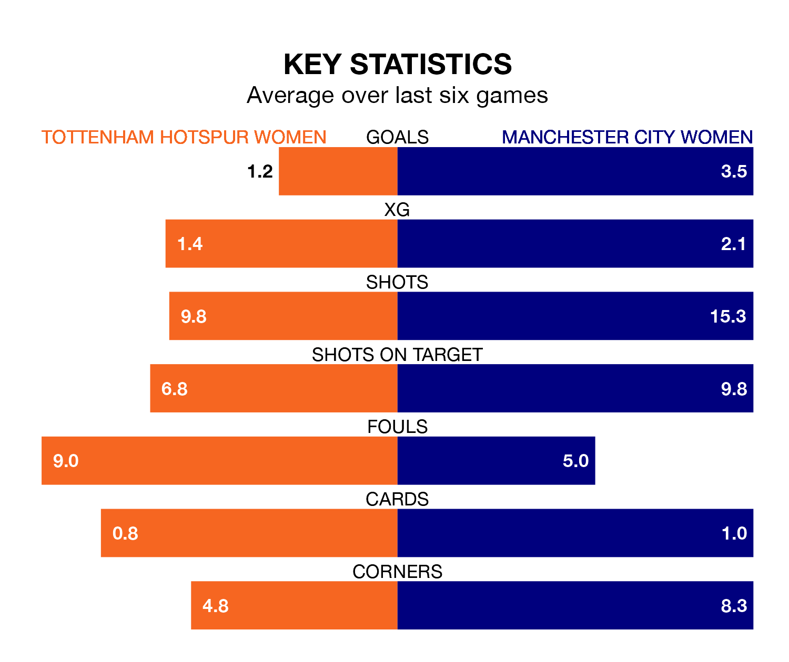

Manchester City Women are strong favourites to take all three points despite Tottenham Hotspur Women's home advantage in Sunday's early match at Brisbane Road.
*Betting Company* are offering odds of 1.3 on Manchester City sealing the win, with the visitors sitting second in FA Women's Super League table.
Tottenham Hotspur, who are sixth in the league and seven points behind City, are priced at 6.9 to win. A draw is set at 4.8.
With 31 goals in 11 games so far this season, Manchester City are the league's second-highest scorers with 2.8 goals per game. And they are conceding fewer than average, letting in eight goals at a rate of 0.7 per game.
Tottenham Hotspur, meanwhile, are average scorers, with 1.7 goals per game. They have conceded 2.1 goals per game.
In Khadija Monifa Shaw, City have the league's most on-form striker so far this season. She has notched 12 goals in 10 appearances.
Her goal rate of one every 60 minutes is much quicker than that of Martha Thomas, Spurs's top scorer with a goal every 134 minutes, and a total of seven goals in 11 games.
In the last 10 years, Tottenham Hotspur and Manchester City have played each other on 10 occasions. Tottenham Hotspur won one of them and Manchester City the other.
On average, Spurs scored 0.5 goals and City 3.2 in those matches.
Their last meeting was on November 26, when Manchester City won 7-0 at home.
The hosts are in mixed form in FA Women's Super League, with two wins and two draws from their last six games.
With five wins and one loss over that period, the away side's form is much better – they have taken 15 points from 18, compared to Tottenham Hotspur's eight.
Tottenham Hotspur's last match was on Sunday, a 4-3 win against West Ham United Women, with Grace Clinton (two), Celin Ildhusøy and Jessica Ngunga getting the goals for Spurs.
Manchester City beat Liverpool Women 5-1 last time out, also on Sunday, with Shaw (three), Chloe Kelly and Gemma Bonner (own goal) on the scoresheet.
Updated: 09:18 (UTC), 23/01/24